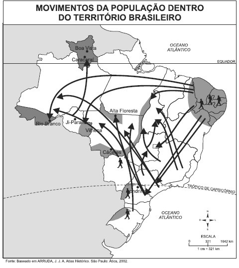
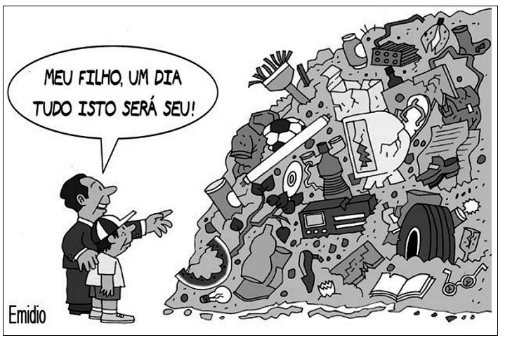
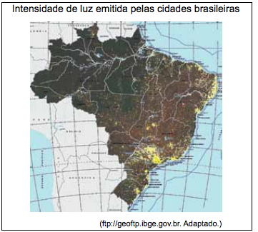

Questões aula 28 - Revisão (aulas 23 à 27)
Questão 01
(UEFS BA 2015)
Sobre as migrações internas no espaço brasileiro, é correto afirmar:

a) A superfície do território e a evolução histórica dos ciclos econômicos estão entre os estimuladores das migrações internas no país.
b) A década de 40 do século passado foi marcada pela expansão do êxodo rural e pela forte industrialização, fatores que resultaram em uma intensa urbanização.
c) O Sul é uma tradicional região excludente, pois os minifúndios dominantes em todo seu espaço não bastam às necessidades econômicas familiares.
d) Os estados de maior movimento emigratório são Goiás e Pernambuco e, com maior imigração, sobressaem-se os estados de Minas Gerais e Espírito Santo.
e) As secas do Sertão nordestino constituem o único fator repulsivo responsável pelas migrações internas ocorridas na Região Nordeste.
Questão 02
(UNIFOR-CE 2017) A charge acima evidencia a despreocupação pelo seguinte elemento do conceito de desenvolvimento sustentável expresso no Relatório Brundtland (1987):

a) Disposição ambientalmente adequada dos resíduos sólidos.
b) Diminuição de todas as formas de poluição.
c) Responsabilidade do poder público sobre o tratamento do lixo.
d) Respeito pela qualidade de vida das futuras gerações.
e) Preservação das espécies em extinção.
Questão 03
(UNCISAL 2010) Nos grandes centros urbanos, a atividade industrial e o uso de automóveis, embora sejam fundamentais ao modo de vida contemporâneo, têm causado efeitos danosos ao homem das grandes cidades. Dentre os efeitos, pode-se destacar:
a) o aumento de raios ultravioleta.
b) a morte de animais e vegetais.
c) a poluição das águas.
d) o derretimento das calotas polares.
e) a formação de ilhas de calor.
Questão 04
(IFMT 2015) A ausência do Estado, nas grandes cidades brasileiras, tem feito emergir novas territorialidades, que são controladas, EXCETO, por
a) gangues que exploram a prostituição feminina infantil.
b) grupo de trabalhadores sem- teto.
c) banqueiro do jogo do bicho.
d) traficante de drogas sob a lei do tráfico.
e) miliciano e grupo de extermínio.
Questão 05
( UEA AM 2015 )Analise o mapa.

O mapa revela a conformação de uma rede urbana
a) adensada, indicada pela ocupação do interior.
b) uniforme, percebida pela complexidade das atividades econômicas.
c) irregular, resultado do acesso desigual à eletricidade pública.
d) desigual, expressa nas diferentes densidades demográficas.
e) concentrada, reflexo da ocupação em pequenos centros urbanos.
Questão 06
( IFMT 2016 ) Considerando-se a influência urbana no campo, em nosso País, é correto afirmar:
a) Em muitas regiões, onde se desenvolve a agropecuária moderna, os agricultores acompanham a cotação de mercadorias (insumo e produtos) pela internet, assistem aos mesmos programas de TV, mas com um pequeno atraso devido à distância.
b) A influência da cidade estendeu-se ao campo como energia e as telecomunicações, integram atualmente seus habitantes numa mesma rede de informação.
c) A mudança no perfil da população indica que a exclusão social no País é, em sua maioria, migrantes da zona rural com grandes famílias, baixa escolaridades, contituídos de mulheres e negros.
d) A exclusão provocada por essa influência é mais difícil de combater, pois há relação direta entre desigualdade, violência e ‘ostentação’.
e) Essa influência no espaço rural possibilitou diversas formas de uso do solo, atraindo infra-estrutura de hotéis e pousadas, estimulando o turismo, e até superando os centros urbanos.
Questão 07
(IFPE 2015 ) É o processo através do qual ocorre a transferência da população do campo para as cidades, tornando-as mais populosas que as áreas rurais. É associado, de forma geral, ao processo de industrialização e, no Brasil, ao longo do século XX, ocorreu de forma rápida e, na maioria das vezes, sem planejamento, o que tem provocado diversos problemas relacionados à falta de infraestrutura. Qual processo foi descrito?
a) Êxodo urbano
b) Urbanização
c) Conurbação
d) Desmetropolização
e) Periferização
Questão 08
(IFMT 2015 ) No Brasil, o processo de urbanização deslanchou após a Segunda Guerra Mundial, como resultado da modernização econômica e do grande desenvolvimento industrial brasileiro, ocorrido a partir da década de 1950. Sobre a urbanização brasileira, marque a alternativa INCORRETA.
a) O processo de urbanização brasileira apoiou-se essencialmente no êxodo rural, que envolve dois condicionantes interligados: a repulsa à força de trabalho do campo e a atração da força de trabalho para a cidade.
b) Os maiores níveis de urbanização estendem-se de São Paulo e Rio de Janeiro para os estados de minas Gerais, Goiás, Mato grosso do Sul, Paraná e Rio Grande do Sul, abrangendo quase todo o Centro-Sul, enquanto que os menores níveis de urbanização aparecem em estados nordestinos e da Amazônia.
c) A urbanização do Centro-Oeste brasileiro foi impulsionada pela fundação de Brasília, em 1960, e pelas rodovias de integração nacional que interligaram a nova capital com o Sudeste, de um lado, e a Amazônia do outro.
d) A violência urbana, nas cidades brasileiras, está relacionada a uma série de fatores socioeconômicos, como: o subemprego, o déficit de moradia e a falta de assistência médica.
e) A urbanização brasileira representa a passagem do Brasil para o estágio de país desenvolvido e moderno. Isso, porque o aumento da população nas cidades foi acompanhado pelo planejamento urbano, evitando assim problemas socioeconômicos.
Questão 09
(UNIOESTE PR) Em relação às migrações no Brasil, assinale a afirmativa INCORRETA:
a) A imigração, vinda de pessoas de outros países para o Brasil, foi muito importante no período de 1850 a 1934.
b) A migração urbano-rural, em que as pessoas deixam a cidade para viver no campo, tem importância numérica pequena no país.
c) As migrações rural-urbanas, também conhecidas como êxodo rural, cessaram no Brasil a partir dos anos 1980.
d) As migrações internas, nas quais as pessoas se deslocam de uma região para outra, assumiram uma importância mais significativa a partir da década de 1930.
e) Portugueses, italianos, espanhóis e japoneses estão entre os principais grupos de imigrantes que se fixaram no Brasil.
Questão 10
(IFMT 2014) O atual modelo capitalista é altamente dependente de recursos energéticos. Diante dessa realidade, o consumo de energia aumentou de forma significativa, fato que tem gerado grandes problemas socioambientais. Sobre as fontes energéticas, marque a alternativa correta.
a) A substituição de petróleo pela energia proveniente de usinas nucleares é a alternativa de produção de energia, a partir de fontes que não causam riscos ao meio ambiente.
b) Os países desenvolvidos industrializados utilizam como matriz energética a hidroeletricidade, sendo considerada uma forma de energia não poluente, de baixo custo de aquisição e renovável.
c) O gás natural ainda é pouco utilizado como fonte energética, devido ao elevado custo de sua produção e transporte, se comparado a outras fontes como petróleo e o carvão.
d) As fontes alternativas consideradas não poluentes são de custos elevadíssimos e só podem ser produzidas em pequena escala.
e) As fontes energéticas mais utilizadas no mundo continuam a ser o petróleo e o carvão mineral, fontes não renováveis e muito poluentes.